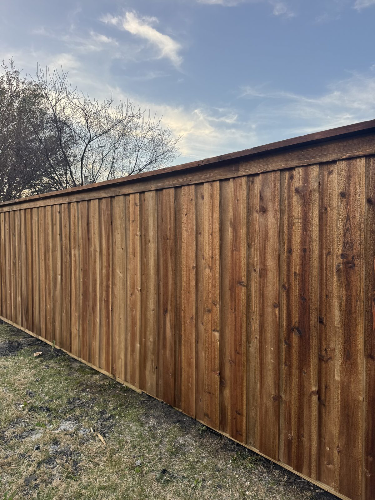
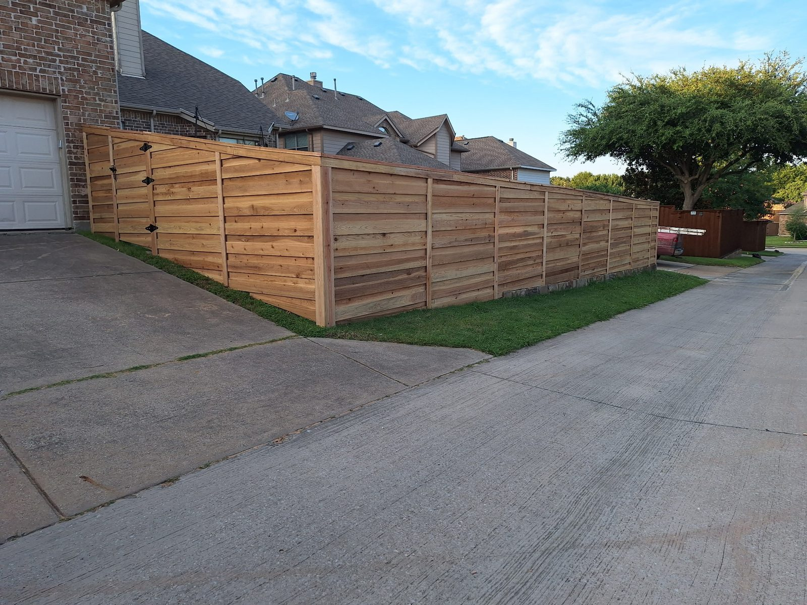
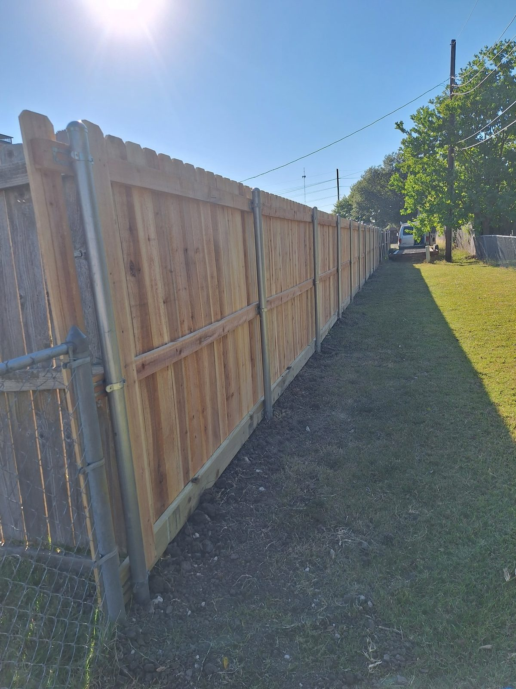
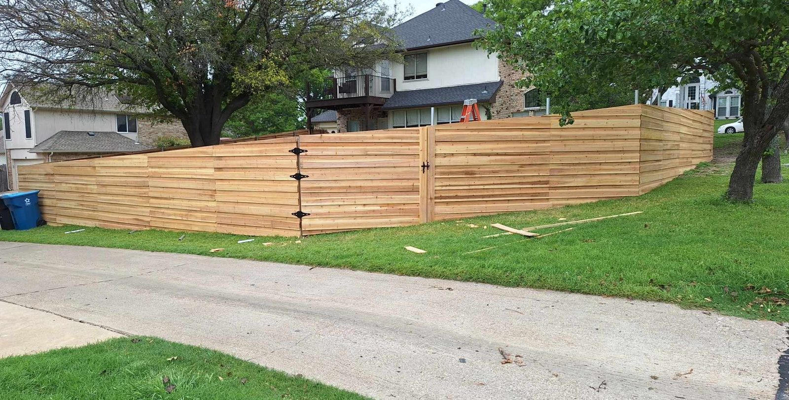
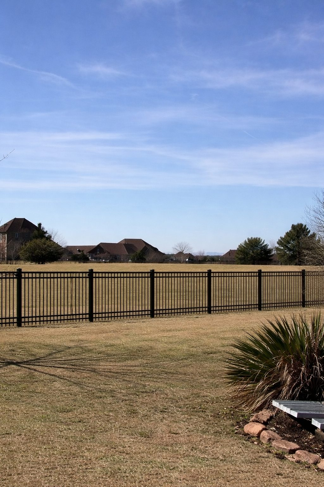
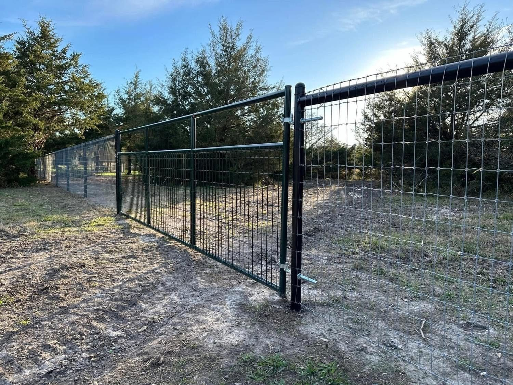
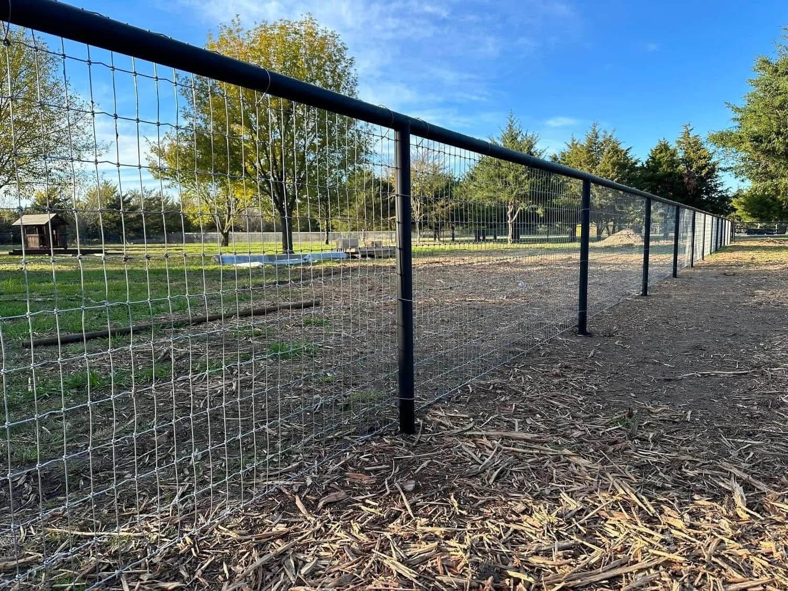

New fences, custom decks, repairs and staining for homeowners across Royse City and Rockwall County. Insured, locally owned, with a written warranty on every job.
The fastest way to get a price is to call. We come out, measure, and give you a written estimate — and most jobs start the next week.
Cedar fences, custom decks, repairs and staining for homes across Rockwall County.
Cedar privacy and board-on-board fences built with proper posts, concrete footings and quality lumber.
See fence building →Leaning sections, broken pickets, rotted posts, storm damage — repaired or replaced fast.
See fence repair →Custom decks designed for your yard, framed to code and built to last through Texas summers.
See deck building →We clean, sand and re-stain weathered decks and fences to protect the wood.
See staining →A few of the fences we've built around the area — cedar privacy, horizontal board, ranch and iron.







Real cedar and proper-grade lumber — not the cheapest boards that warp in a season.
Properly dug, set and braced posts so your fence stays straight for years.
Decks framed and fastened to last and to pass inspection where required.
Fully insured for the work we do, with a written warranty on every build.
We live and work here. Your neighbors are our customers.
Clear, written estimates before we start.
Rockwall Fence & Deck is part of the i30 Builders family — rated 5.0 across their reviews.
"i30 Builders were absolutely the best! Their quote was not only affordable but they were able to get to the work immediately!"
"These guys do amazing work and were even able to accommodate a rushed timeline."
"One thing that stands out is how much they care about the people they work with."
Four steps, start to finish:
Call us or fill out the form. Calling is usually the fastest.
We come out, look at the space, and measure it. It's free.
We give you a clear, written estimate, usually the same day.
Once you approve it, we get you on the schedule. Most jobs start the next week.
Based in 75189 and serving homeowners across Rockwall, Hunt and Collin counties.
Royse City · Fate · Rockwall · Heath · Caddo Mills · McLendon-Chisholm · Wylie · Sachse · Lavon · Nevada · Josephine · Greenville · Quinlan · Farmersville · Princeton & more
See Full Service Area →In our area, cedar privacy fences typically run about $45–$65 per linear foot installed — so a standard 150-ft backyard runs roughly $6,500–$10,000 depending on height, grade and gates. Send your details for an exact written estimate.
Most wood decks here run about $40–$70 per square foot built, depending on size, height, material and railings. We'll give you a clear written price after a quick look at your space.
Most residential fences go up in 1–3 days; decks usually take a few days to a week depending on size and design. We give you a realistic timeline with your estimate.
Both. We repair leaning fences, broken pickets, rotted posts and storm damage, and we restore weathered decks with cleaning, sanding and fresh stain.